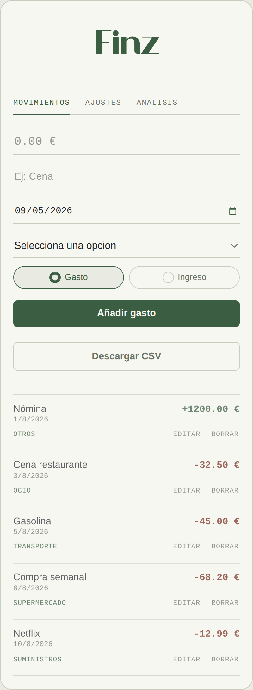
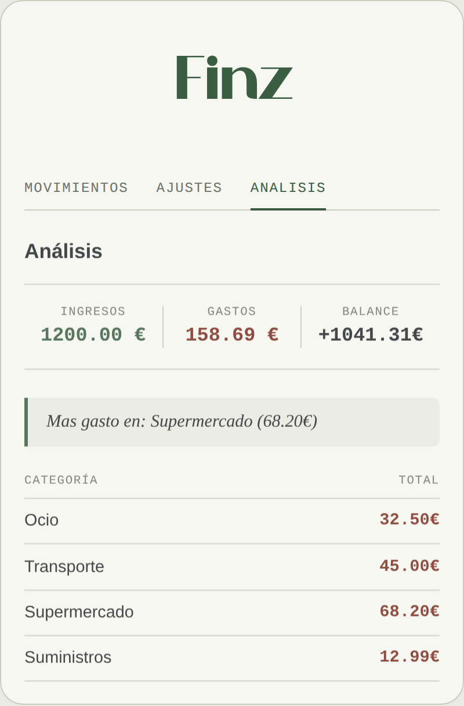
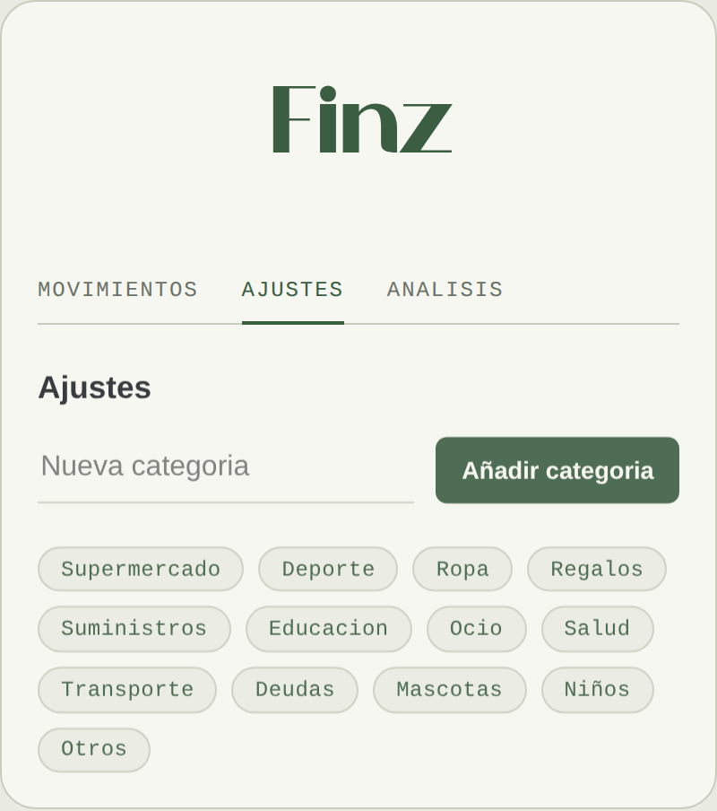

Ingresos y gastos en un mismo sitio
Cada movimiento se anota con nombre, cantidad, categoría y fecha — la misma fecha se puede corregir después, por si se te olvida apuntar algo el mismo día.
Lleva tus ingresos y gastos como un libro de cuentas: una línea por movimiento, categorías claras y el balance siempre a la vista.
Cada movimiento se anota con nombre, cantidad, categoría y fecha — la misma fecha se puede corregir después, por si se te olvida apuntar algo el mismo día.
Trece categorías de partida, y puedes añadir las tuyas propias desde Ajustes cuando necesites una que no está.
Un resumen de ingresos, gastos y balance, más una tabla que te dice en qué categoría se te va más dinero cada mes.
Si te equivocas al apuntar un gasto, lo corriges o lo eliminas en dos toques — sin tener que borrar todo y empezar de nuevo.
Añádela a la pantalla de inicio de tu móvil (iOS o Android) y ábrela como cualquier otra app, sin pasar por el navegador.



Todos tus datos se quedan en tu propio navegador — no hay base de datos ni servidor de por medio. Eso significa que Finz funciona sin conexión y que nadie más que tú ve tus cuentas, pero también que los datos no viajan solos entre tu móvil y tu ordenador: cada dispositivo lleva su propio libro.